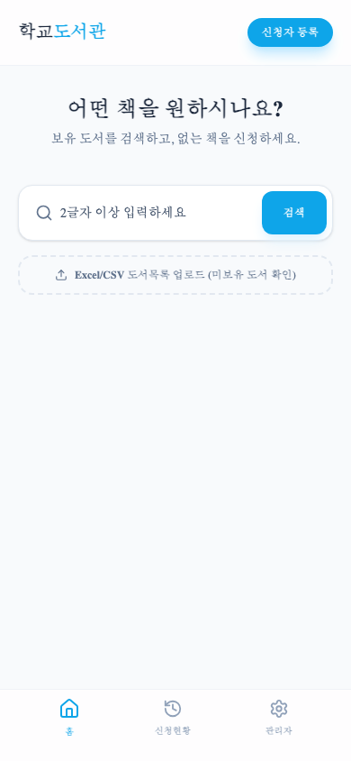
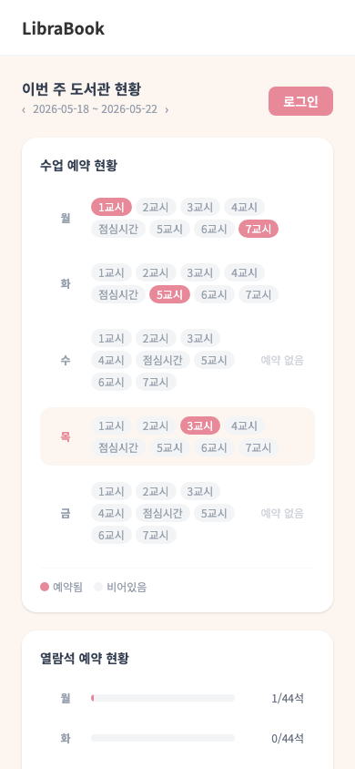
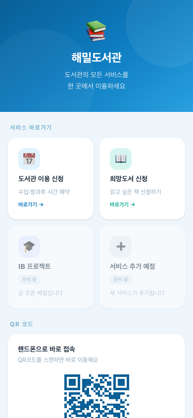
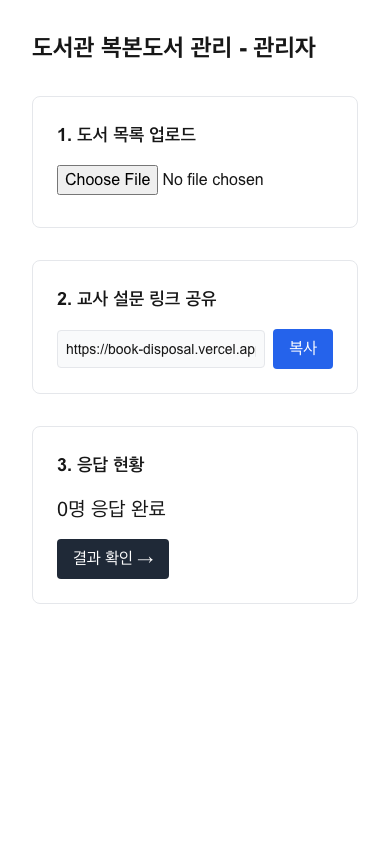
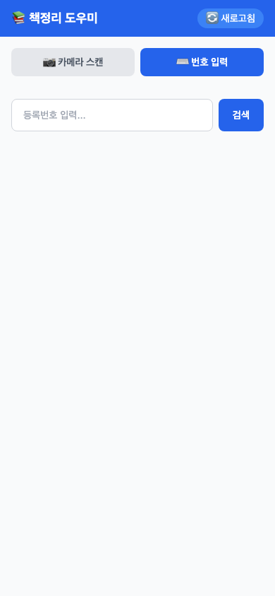

📱
📱
MY LAB
학생들이 스마트폰으로 도서를 대출·반납하고 독서활동을 관리하는 학교 도서관 앱
- 학생 바코드로 도서 대출·반납 처리
- 도서 검색 및 감상문 작성
- 반납일 푸시 알림
사서
바이브코딩으로 다양한 자동화를 시도 중인 평범한 일반인
Projects
학생들이 스마트폰으로 도서를 대출·반납하고 독서활동을 관리하는 학교 도서관 앱

학생·교직원이 원하는 책을 검색하고 신청하는 희망도서 관리 웹앱

선생님·학생이 도서관 수업 시간과 방과후 좌석을 예약하는 시스템

해밀도서관의 모든 서비스를 한 곳에서 이용하는 통합 포털

10권 이상 보유 복본도서를 교사에게 공유해 수업 활용 계획을 수집하고 폐기 대상을 선별하는 웹앱

도서부 학생이 바코드를 스캔하면 해당 책의 서가 위치(앞뒤 3권)를 시각화해주는 모바일 웹앱